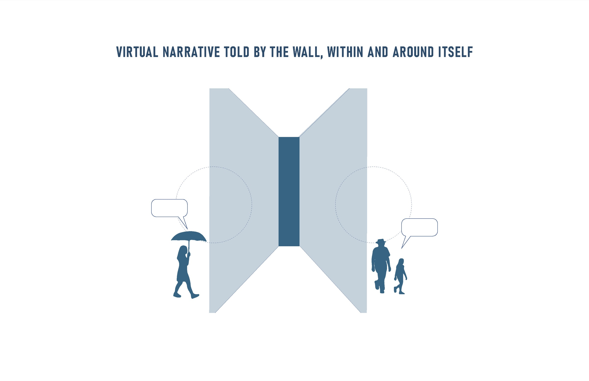
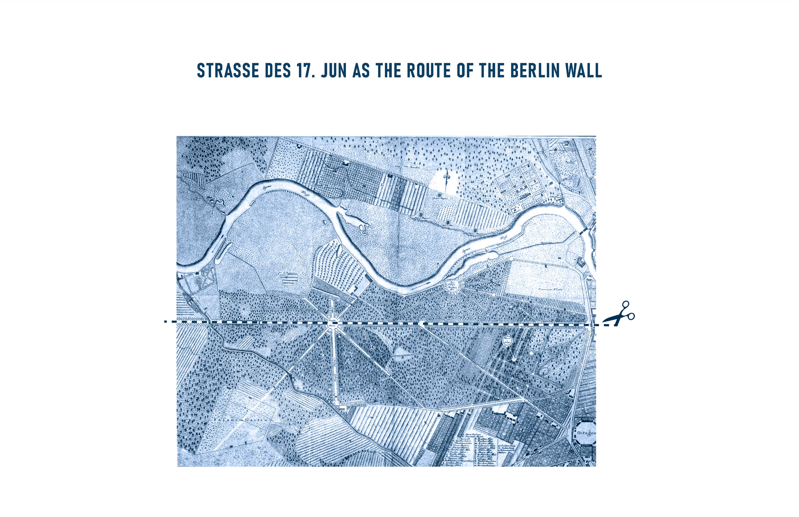
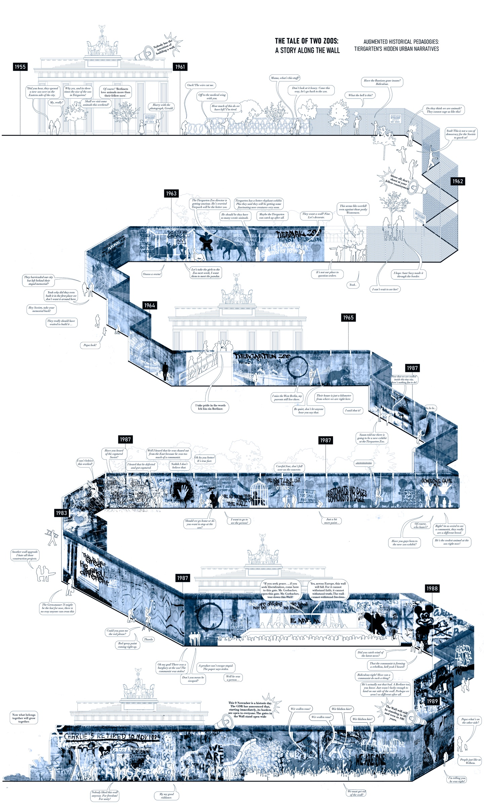

2022
THE SPRAY-PAINTED MIRAGE
An alternative critical historiography
CONTEXT
Augmented Historical Pedagogies: Tiergarten’s Hidden Urban Narratives
LOCATION
Tiergarten Park, Berlin
SOFTWARE
Rhinoceros 3D, Photoshop, Illustrator, Unity 3D, Unreal Engine, MeshMixer, Metaform, LiDAR scanning
COLLABORATION
Individual project; Berlin workshop with Antonia Baeker
SUPERVISORS
Mark Jarzombek, Cagri Zaman, Eliyahu Keller
This virtual experience leads the inhabitant through an alternate history in which the Berlin Wall runs along the Street of the 17th of June through Tiergarten. The wall tells its story, reflecting on division, escapes, construction, and destruction while narrating the case of a man sold to a zoo to escape from the East.
Visual and audio material creates an immersive experience that places viewers within what transpired, what could have been, and what may happen again.


